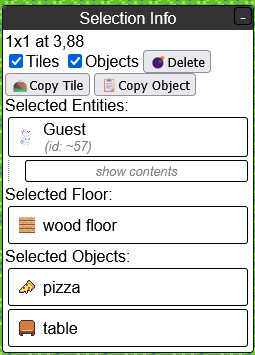
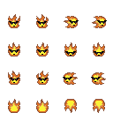

A big focus in Tilemap Town is building, and you're welcome to make cool stuff! If you want to learn how to build, first move to an area in the world with some free space; you don't want to mess up something someone else built, after all.
You can click on the "Build" button at the top to bring up the build window. There are two modes here, and you can change modes by pressing the R key, or by clicking on the buttons at the top of the build window.
There are multiple tile categories to pick from. "My inventory" will show every "Map tile" item in your inventory, but otherwise there's no way to add new tile types to the build menu yet. Right clicking on a tile in the build window will allow you to copy it to your inventory or hotbar (more on that later).
In "Select" mode, you can select tiles on the map. This will bring up a window that looks like this:
From here you can choose to delete a rectangle of tiles; you can choose to delete only floor tiles or only objects, or both. You can also right click on the tiles in the selection window to change or reorder them, or copy them to your hotbar.

The hotbar is the area at the bottom with ten numbered spaces. You can press the number keys on your keyboard to quickly switch between slots, or you can click on them. You can also drag to reorder them, and right click to edit or delete the tile in that slot.
The hotbar's purpose is to give you quick access to up to 10 different tile types, but you can also use it as a little work area where you can compose a tile with whatever properties you want, and then draw with it.
You can right click and edit a tile on your hotbar, in your inventory, or in the selection window. This will bring up a window where you can change the tile's properties.
You can choose between multiple tile sheets, which are images that each contain a bunch of different tiles graphics. You can click on a spot within a tile sheet to choose the tile graphic in that spot, and you'll be shown a preview of which graphic you have selected. There are many tile graphics in here that aren't in the build menu, so have a look around!
There are animation and autotiling features you can make use of, but they probably won't be very useful unless you're making your own custom tile sheets. There are also controls for whether the tile should be treated as a wall or not, and whether the tile should appear in front of players or behind them.
In order to use your own custom sprites for your character, you will need to create a sprite sheet in an art program on your computer, and then upload the file somewhere.
This file should be a grid of 32x32 frames. Tilemap Town will use the width and height of the file to determine how many directions and animation frames it has. Here are some examples:

The first has one column and four rows, so it has four directions and no animation.
The second has four columns and four rows, so it has two frames of animation when idle, and two frames of animation when moving.
The third has eight columns and two rows, so it has four idle frames and four movement frames.
| 1 column | No animation |
|---|---|
| 2 columns | 1 frame when idle, 1 frame when moving |
| 4 columns | 2 frames when idle, 2 frames when moving |
| 6 columns | 3 frames when idle, 3 frames when moving |
| 8 columns | 4 frames when idle, 4 frames when moving |
| 1 row | Same appearance used for all directions |
|---|---|
| 2 rows | First row is used when facing right, second row is used when facing left |
| 4 rows | Rows go in order of right, down, left, up |
| 8 rows | Rows start facing right and go in clockwise order |
You may find it helpful to use a template. If you don't want to mess with directions or animation, you can draw a 32x32 image and upload that.
The simplest option for uploading a custom avatar is to upload it directly to the Tilemap Town server, which requires user registration.
After you've uploaded a file, you can browse all of the files you have uploaded in the "File uploads" window. You can right click on a file to change it (uploading a new file, changing the name) or quickly switch over to another avatar you have uploaded.
Alternatively, you can upload your avatar to another site. This does not require user registration, so guests can do it. Currently the server will accept uploads from File Garden, ImgBB, and Postimages, and more sites can be added on request, as long as they are set up properly. Limiting it to approved sites protects user privacy, because otherwise someone could use a file on their own website and then record what IP addresses access that file.
Once you have uploaded a file to another service, you will need to get a link directly to that file. That may involve right clicking on the image after it has been uploaded and choosing "Copy Image Link". From here you can click the 🐇 button in the top left on Tilemap Town, and paste the copied link in the section that asks for a URL.
In order to use custom map tile graphics, you need to create an image file containing the graphics you would like to use and then upload it somewhere, similar to creating a custom player avatar. This file should be a grid of tiles that are each 16x16 pixels in size.
You can arrange tie graphics in whatever arrangement you like, and have as many as you like. You can have objects that are bigger than 16x16 by using multiple tiles and then placing them next to each other on a map, like the bed in the above example.
If you create a horizontal strip of tile graphics, you can set up an animation in the tile editing window. You'll be able to control the frame count, frame speed, and animation direction.
There's a feature where you can supply multiple tile graphics and have a tile automatically choose which graphic to use based on what tiles are nearby. This requires you to put the tile graphics in a specific pattern on the image. There's a description of the different autotiling modes here; I'd like to make a helpful diagram later on.
As with custom avatars, you will need to upload your image file somewhere, and you can choose between uploading directly to the server, or to an image hosting site. This guide will cover uploading to the server.
As with custom avatars, you can reupload this file after uploading it using the "File uploads" window, and any tiles drawn using the graphics on it will automatically update to the new appearance.
Tiles with custom tile graphics work in a somewhat indirect way. A tile on the map actually points to a tile sheet item rather than directly pointing at a file. This item holds a link to an image file, whether uploaded to the server or an image host. That means that this item needs to continue to exist somewhere in order for the map tiles that use it to keep their appearance. You can keep it in your inventory, or drop it somewhere on one of your maps if you want to keep your inventory clean.
It's designed this way because custom tile graphics were implemented about six years before file uploads were. Your only option originally was to upload a file to an image hosting site, and these sites generally do not let you modify images after uploading them. That meant that if you wanted to change the image, you had to delete it and upload a new one, which would give you a new image URL. Tile sheet items allowed you to paste the new URL into a single place in Tilemap Town, and instantly update all of your tiles that were using the old URL.
You can create a tile sheet item when uploading a file, or you can right click on a file you have uploaded to create an item for it later on.